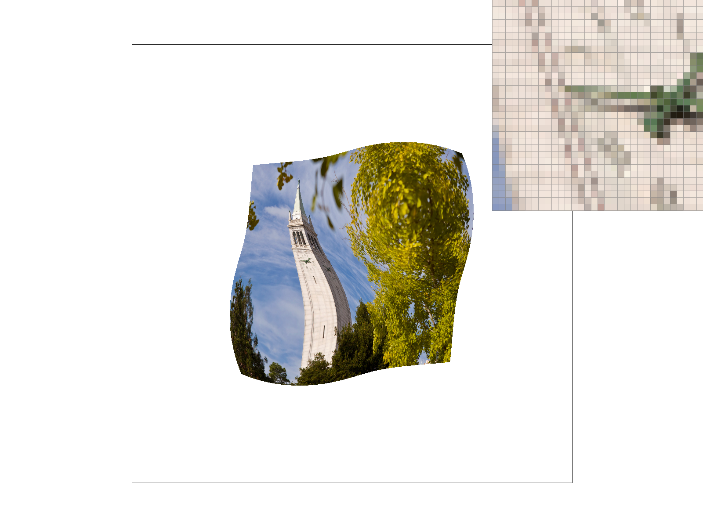

Link to GitHub repository:
https://github.com/cal-cs184-student/sp25-hw1-qaqOverview of the project:
In this project, we are going through several basic techniques that we need for raasterization like sampling, interpolation, and texture mapping. In the first 2 tasks, we are going to implement triangle rasterization with anti-aliasing techniques for better quality by using point-in-triangle test and supersampling. In task 3, we are going to play with the basic 2D transformation with a cubeman. In task 4, we are implementing a interpolation techniques called barycentric coordinates that can help us to interpolate the color in a triangle smoothly. For task 5 and 6, we are going to implement texture sampling and level sampling, we implement texture sampling for texture sampling to interpolate from pixel space to screen space, and we use level sampling to help with aliasing issue in order to enhance the performance of rendering. Bascially, we walk through a part of the rasterization pipeline in this project with implementing different techniques required in different tasks. Which gives a really solid basis for undestanding how rasterization works in general.
Task 1. Drawing Single-Color Triangles
For this task, we need to finish the function rasterize_triangle() by implementing the sampling methods introduced in class. For this function, we are given 3 points that form a triangle, so the first step I did to increase the efficieny is that using the built in min, and max C++ funtions to determine a bounding box of all the sample that I need to work with. After that, I have a nested for loops that check whether each sample in the bounding box are in the triangle or not using the point-in-triangle tests (3 line tests) that is introduced in class. Over here, we need to address one problem as the spec mentions. we should draw the triangle regardless of the winding order of the verticies of the triangle. For the 3 line tests, the winding order matter which it could be clock-wise or counterclock-wise. In order to address the issue, we can check whether the L0, L1, and L2 that we computed are all the same sign or not. If L0, L1, L2 are all positive or all negative, then the point is inside the triangle. Note that since we want to draw the boundary of the triangles as well, we should use lesss than or equals to (<=) and greater than or equals to (>=). Note that since there may have some floating-point rounding errors that has a really small number instead of 0, instead of thresholding at 0, I introduce a little slack variable to adjust the issue. At last, if the pixel is in the triangle, we call the method fill_pixel() to fill the pixel with specified color.
test4.svg with pixel inspector on the red triangle

As we can see, there are some jaggies here around sharp angle of the red triangle, and it is clearer using the pixel inspector. We can also preceive the same issue with the pink triangle as well. We will solve the issue in the next task using supersampling.
Task 2. Antialiasing by Supersampling
As we discovered in the previous part where the skinny triangle corners like the red and pink triangles are having some aliasing issues. In this part, we are going to implement supersampling to deal with the issue. The idea of supersampling is easy, we bascially sample mutiple locations in a single pixel and average the all the sampling pixel values into 1 final pixel value for rasterization. The reason why supersampling helps to deal with aliasing is because for the pixels where it is only partially in the triangles, like edges and corners, we still have some lighter color for it to smooth them out. In my implementation, I built on the code in the previous task, we are using the same bounding box method for better efficiency. But over here, instead of 2 nested for loops, I have 4 nested for loosp where the outer 2 for loops are for each each pixel like in the previous part, and the inner 2 for loops are for sampling the multiple locations in each pixel. The step size and the upper bound for the inner loops are all depend on the sampling rate. After we get the correct locations in the loop, we use the same point-in-triangle tests as in the previous task to see whethe the location is in the triangle or not. And here comes the trickest part of the task, since each locations is not an entire pixel, we can't just call fill_pixel() to fill the pixel like in previous task. Over here, we use the sample_buffer that is provided in the starter code, which is a vector of Color class. This vector have all the colors for each sample locations, so we need to update some other functions like set_sample_rate() to adjust to the new length of sample_buffer with different sample rate. If the sample location is in the triangle, we set the sample_buffer at index that is calculated using all 4 loop values and sample rate with the specified color. And for rasterization, we modify the resolve_to_framebuffer() function by adding all the colors in each pixel using a for loop and devided it by sample rate to get a average final color for each pixel.
test4.svg with different supersample rate
supersample rate = 1

supersample rate = 4

supersample rate = 9

supersample rate = 16

As we can see in the above comparison of different supersample rate, as the rate increase, the effect of antialiasing will get stronger. In the pixel inspector, the lighter red pixels around the sharp corners of the red triangle are making it more smooth instead of all breaking apart like in case where supersample rate = 1. And we can also see from the big picture that all the sharp corners in picture are smoother with higher supersample rate. This is because by using supersampling, we allow some pixel that are not entirely in the triangle to have some lighter color that can make the edges and corners a lot smpoother instead of just totally blank and seems to be cutoff.
Task 3. Transforms
This part is pretty simple conceptually. What we did was just implement the translate(), scale(), and rotate() functions the same way as mentioned on the lecture slides. The main idea is just want to get us used to the simple 2D transformations that we can perform by making the cubeman to do some interesting stuff with the transformation.
Cubeman dancing

Cubeman doing a salute

As you can see, just by using simple transformation, we can make the cubeman to dance and salute, and there are more and more other possibilites.
Task 4. Barycentric coordinates
For this task, we are implementing a interpolation method called barycentric coordinates. Based on the realative location inside the triangle to the 3 vertices that defined the triangle, we can compute the value at the location base on the value of the 3 vertices. For example, look at the following triangle.
Triangle with one red, one green, and one blue vertex

The 3 vertex of the triangle are red, green, and blue. And all the colors in the triangle are calculated based on its realtaive position to the 3 verticies. We first compute 3 coefficient (\( \alpha \, \beta\, \gamma\)) based on the position of the current location and the locations of the 3 verticies. We then use the 3 coefficients to get the value that we want, which is pixel value in our case. As we can see, the transition between colors are really smooth. Also, not just colors, Barycentric Coordinates can also works on something like texture and normal vectors.
Color Wheel

Task 5. “Pixel sampling” for texture mapping
The reason why we need to do pixel sampling is because that the ratio of texture space and screen space may not be the same, so we can't just take the pixels in teaxture space and put it right onto the corresponding location in screen space directly, we need some kind of interpolation. And in this task, we are implementing 2 different pixel sampling techniques, which are nearest and bilinear. The nearest method is quite literal, we just acquire the texture value that is closest to the calculated uv coordinate in the texture space. Where as bilinear is a little bit more complicated. Like nearest sampling, we also have a calculated uv corrdinates. But this time, we get the 4 closest pixel value, and we "lerp" the 4 pixel values together using lerp_color() function into 1 color for rendering. So, the most important task here comes to how can we calculate the correct uv coordinates in the texture space. We use the same 4 nested for loops from supersampling in task 2 to loop over all the positions. And for each position, we use barycentric coordinates to check whether the point is in the triangle or not. If it is in the triangle, we calculate the uv coordinates using the \( \alpha \, \beta\, \gamma\) coefficients with the given u, v values. And we now get the pixel value that we need for rendering from one of the specified sampling method. we assign the color to the correct index in sample_buffer like in task 2.
test5.svg with different supersample rate and pixel sampling techniques
supersample rate = 1 with nearest

supersample rate = 1 with bilinear

supersample rate = 16 with nearest

supersample rate = 16 with bilieanr

As we can see, the bilinear method makes the picture a lot smoother, especially when we look up closely at the alphabet "B" in the pixel inspector. but notice that, when we are using higher supersampling rate, the difference bewteen nearest and bilinear method are samller than in the case of lower supersampling rate. This is bascially because high supersampling rate already provides strong antialiasing effect, so the addition of the bilinear method can't make too much of the difference than the nearest method compare to the case of using a lower supersampling rate.
Task 6. Mipmaps for varying resolution texture mapping
In this section, we implement level sampling, where we choose the resolution of the texture map to use based on the base 2 logarithm of the jacobian of the homography that carries the points from the image triangle mesh to the texture triangle mesh. We compute this jacobian approximately by taking the max of the norms of two standard basis vectors under the map.
Texture Mapping with Different Filtering Modes
L_ZERO & P_NEAREST
L_ZERO & P_LINEAR
L_NEAREST & P_NEAREST
L_NEAREST & P_LINEAR
Comparison between all sampling techniques
we have already explored pixel sampling, level sampling, and supersampling in this HW. There are some advantages and disadvantages of using each of them. Supersampling is conceptually the easiest, and the antialiasing power is amazing, but it requires a lot more cost which cause it to run slowly since it need to compute and look up a lot more locations that 2 other methods. For level sampling, although it taks more memory usage since it needs to pre compute severl levels and store it, but it doens't need to compute again eveytime when rendering, which is more cost-effective than super sampling and also provides powerful antialiasing effect. At last, for pixel sampling, as we can see from previous part, nearest method can do really limited antialiasing effect by itself even though it doesn't require too much of memory and can be computed really fast. On the other hand bilinear method can provide a really strong antialiasing effect with a little more computation. And as we can see, by combining these techniques together, we can provide a even stronger antialiasing effect.